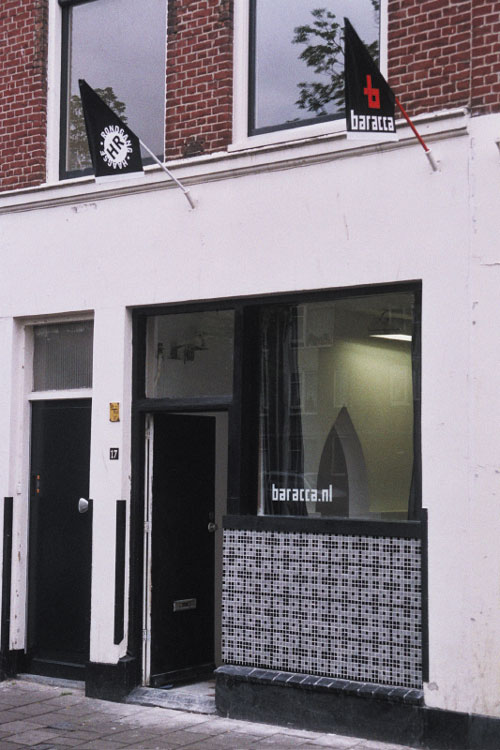
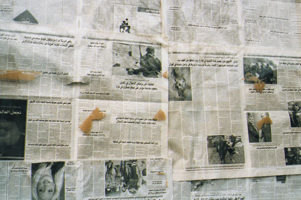

| < vorige | Terug naar overzicht |
Artist Initiative Baracca Zuidwal 17 Den Haag / 2005 - 2010
32. expo 11 sept. 2009 [tijdens Hoogtij#18] groepsexpositie Baracca ‘9/11’ werk van o.a Lenny Waasdorp, Marisa Polin etc.
met optreden van Hans Lagerweij [Tenorsax] met Han van Hulzen [drums]
31. expo 8 mei 2009 [tijdens Hoogtij#17] groepsexpositie gecurateerd door Stichting Wei Eindhoven met optreden van Bird
30. expo 13 febr. 2009 [tijdens Hoogtij#16] Installation project by John Fanning and Glenn DiLando a.k.a. TrillHaus, Portsmouth installation ‘The worst 1-Euro Store in the world’
29. expo 2 jan. 2009 Installatie Yvo van der Vat & Ibrahim R. Ineke ‘The garment not the man’ & muzikale rondleiding/performance ‘Conwitpag’ met Hans Lagerweij
28. expo 21 nov. 2008 [tijdens Hoogtij#15] 3-D muurobject Ron van der Ende ‘Exploded view’
27. expo 12 sept. 2008 [tijdens Hoogtij#14] nieuw electronisch werk Erik Alblas
26. expo 25 juli 2008 Installatie en nieuw werk aan de muur Nicola Kirkaldy + Iede Reckman
25. expo 4 juli 2008 Installatie Ontwerpbureau Shootmedia Groningen met optreden E=OH
24. expo 13 juni 2008 5 nieuwe werken Yvo van der Vat
23. expo 23 mei 2008 [tijdens Hoogtij#13] Installatie Harmen de Hoop ‘3 Haagse Beelden’
22. expo 18 april 2008 Muurinstallatie Sander van Heukelom & Jeffrey Grouwstra met optreden Rob Bothof & Twan Bastiaansen
21. expo 28 maart 2008 [tijdens Hoogtij#12] CD Presentatie ‘Brachland’ van Peal met artwork Ibrahim R. Ineke
20. expo 25 jan.2008 [tijdens Hoogtij#11] Installatie Yvo van der Vat ‘Movement to be black’
19. expo 21 dec. 2007 nieuwe beelden Onno Kroes met optreden Grand Voice
18. expo 23 nov. 2007 [tijdens Hoogtij#10] 3 werken van Ton Schuttelaar en The Youman mobiele performance
17. expo 26 okt.2007 Filmprojectie Sarawut Chutiwongpeti, Bangkok Thailand en installatie Yvo van der Vat ‘The Future of what?’
16. expo 21/22 sept. 2007 [tijdens Hoogtij#9] installatie Rob Bothof & Twan Bastiaansen ‘Plug & Play interactive soundspace’
15. expo 6 juli 2007 [tijdens Hoogtij#8] conceptueel werk Jazztrio met Eric Ineke, John Ruocco en Marius Beets en gejat werk ‘The Hague Jazz Robbery’
14. expo 23 mei 2007 [tijdens Hoogtij#7] Installatie Gamal Ez ‘Toetanchamon 2007’
13. expo 13 april/ en sponsor feest 7 april Catacomben 2007 Carl Palm ‘Studies of God’ met optreden Jazzbunker 4
12. expo 23 maart 2007 [tijdens Hoogtij#6] Installatie grafisch werk Thijs Ebbe Fokkens met optreden Roy Santiago
11. expo 23 febr. 2007 installatie en Tape-tekening Yvo van der Vat & Ibrahim R. Ineke ‘Don’t stick your nose into someone else’s business’
10. expo 26 jan.2007 [tijdens Hoogtij#5] installatie De Humobisten ‘Pommes Frieden’ met dj duo De Humobisten
09. expo 17 nov. 2006 [tijdens Hoogtij#4] Installatie Yvo van der Vat ‘the Common man’ met optreden dj Pat
08. expo 22 sept. 2006 [tijdens Hoogtij#3] installatie Iwan van ’t Spijker & Markus Shimizu ‘look into my eyes baby’
07. expo 7 juli 2006 [tijdens Hoogtij#2] Installatie Grafisch ontwerpbureau Manuela Porceddu & Derek Reneman: ‘de Haagse Jazzmoord’ met optreden van Jazzduo Eric Ineke & John Ruocco
06. expo 26 mei 2006 [tijdens Hoogtij#1] installatie Norman Maus ‘Recorded Architecture’
05. expo 31 maart 2006 [tijdens de Haagse Rondgang nr. 38] Graffitti-Art Baracca Foundscape: Street Art werk van o.a. Kaoz, Ulta etc.
04. expo 11 dec. 2005 [tijdens de Haagse Rondgang nr.37] 3 Licht/geluid objecten Marcel Koene ‘Tect, Cultuur met een grote C’ met optreden dj Pat
03. expo 2 okt.2005 [tijdens de Haagse Rondgang nr.36] Baracca Fontscape in de Baracca-‘Fontspace’
02. expo 29 mei 2005 [tijdens de Haagse Rondgang nr.35] Alternatieve Rondgang Baracca- ‘Sanctuary’
01. expo 27 febr. 2005 [tijdens de Haagse Rondgang nr.34] Installatie Baracca-‘Al-Fatihah’
Foto's:
Officiële opening Baracca
Baracca nog dicht
www.baracca.nl >

